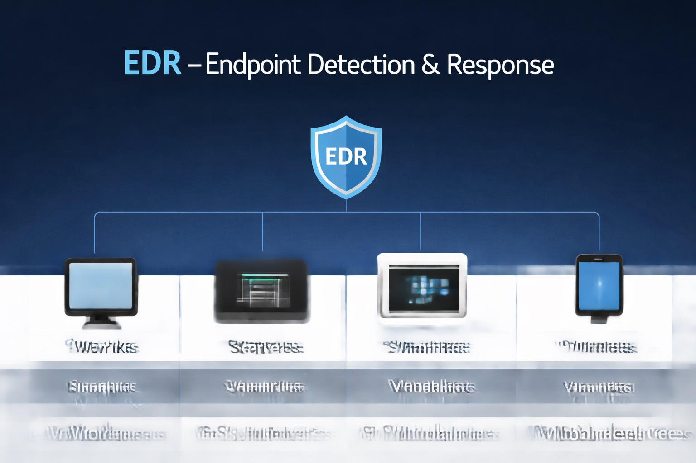
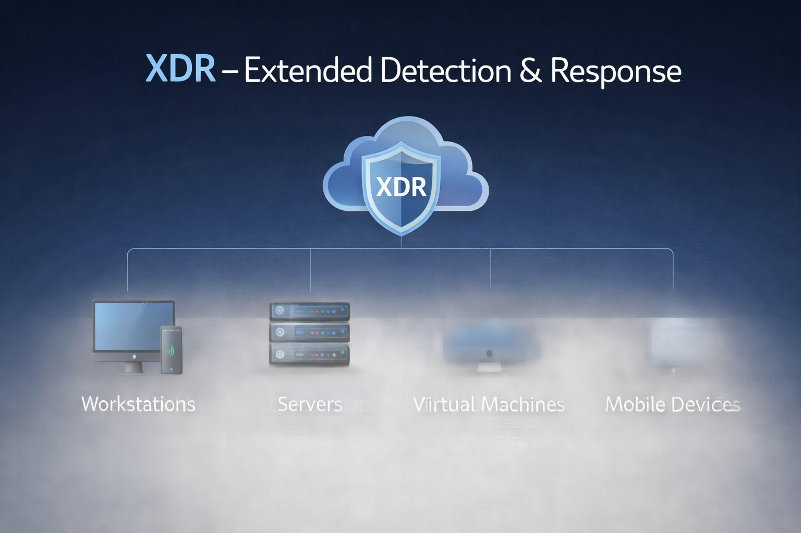

Évolution des solutions EDR vers les XDR et impact de l’IA (Autonomous SOC) sur le métier SISR
EDR – Endpoint Detection & Response
- Surveille les endpoints (postes, serveurs, VM)
- Analyse les logs et détecte anomalies
- Génère alertes pour l’administrateur
- Exemples : Cybereason, SentinelOne
XDR – Extended Detection & Response
- Supervision endpoints + réseau + cloud + logs
- Corrèle incidents pour vision globale
- Exemples : Rapid7, Palo Alto, Fortinet
Autonomous SOC
- IA intégrée pour détecter, corriger et agir automatiquement
- Réduit le travail manuel et prévient incidents
- Supervision proactive et prédictive
Impact sur le métier SISR
- Moins de tâches répétitives
- Supervision proactive et prédictive
- Gestion et réponse aux incidents simplifiées
- Maintien de la disponibilité des services critiques
Sources et méthode de veille
- Flux RSS spécialisés IT / cybersécurité
- LinkedIn / X pour suivre nouveautés
- Reddit / communautés IT pour retours d’expérience